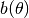
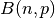
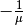
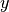

Generalized Linear Models¶
Generalized linear models currently supports estimation using the one-parameter exponential families.
See Module Reference for commands and arguments.
Examples¶
# Load modules and data
In [1]: import statsmodels.api as sm
In [2]: data = sm.datasets.scotland.load()
In [3]: data.exog = sm.add_constant(data.exog)
# Instantiate a gamma family model with the default link function.
In [4]: gamma_model = sm.GLM(data.endog, data.exog, family=sm.families.Gamma())
In [5]: gamma_results = gamma_model.fit()
In [6]: print(gamma_results.summary())
Generalized Linear Model Regression Results
==============================================================================
Dep. Variable: y No. Observations: 32
Model: GLM Df Residuals: 24
Model Family: Gamma Df Model: 7
Link Function: inverse_power Scale: 0.00358428317349
Method: IRLS Log-Likelihood: -83.017
Date: Tue, 28 Feb 2017 Deviance: 0.087389
Time: 21:38:03 Pearson chi2: 0.0860
No. Iterations: 4
==============================================================================
coef std err z P>|z| [0.025 0.975]
------------------------------------------------------------------------------
const -0.0178 0.011 -1.548 0.122 -0.040 0.005
x1 4.962e-05 1.62e-05 3.060 0.002 1.78e-05 8.14e-05
x2 0.0020 0.001 3.824 0.000 0.001 0.003
x3 -7.181e-05 2.71e-05 -2.648 0.008 -0.000 -1.87e-05
x4 0.0001 4.06e-05 2.757 0.006 3.23e-05 0.000
x5 -1.468e-07 1.24e-07 -1.187 0.235 -3.89e-07 9.56e-08
x6 -0.0005 0.000 -2.159 0.031 -0.001 -4.78e-05
x7 -2.427e-06 7.46e-07 -3.253 0.001 -3.89e-06 -9.65e-07
==============================================================================
Detailed examples can be found here:
Technical Documentation¶
The statistical model for each observation  is assumed to be
is assumed to be
and .
where is the link function and  is a distribution of the family of exponential dispersion models (EDM) with
natural parameter
is a distribution of the family of exponential dispersion models (EDM) with
natural parameter  , scale parameter and weight
.
Its density is given by
, scale parameter and weight
.
Its density is given by
It follows that and . The inverse of the first equation gives the natural parameter as a function of the expected value such that
with . Therefore it is said that a GLM is
determined by link function and variance function  alone (and of course).
alone (and of course).
Note that while is the same for every observation
and therefore does not influence the estimation of  ,
the weights might be different for every such that the
estimation of depends on them.
,
the weights might be different for every such that the
estimation of depends on them.
| Distribution | Domain | ![\mu=E[Y|x]](_images/math/fdff08089137d887b7e63a434315206a7be7cd76.png) |
|
 | ||
|---|---|---|---|---|---|---|
| Binomial  | 1 | |||||
| Poisson |  |
|
1 | |||
| Neg. Binom. | |
1 | ||||
| Gaussian/Normal | |
 |
|
 |
||
| Gamma | |
 | ||||
| Inv. Gauss. | |
|
||||
| Tweedie | depends on  |
|
The Tweedie distribution has special cases for not listed in the table and uses .
Correspondence of mathematical variables to code:
- and  are coded as
endog, the variable one wants to model - is coded as
exog, the covariates alias explanatory variables - is coded as
params, the parameters one wants to estimate - is coded as
mu, the expectation (conditional on ) of - is coded as
linkargument to theclass Family - is coded as
scale, the dispersion parameter of the EDM - is not yet supported (i.e. ), in the future it might be
var_weights - is coded as
var_powerfor the power of the variance function of the Tweedie distribution, see table  is either
is either- Negative Binomial: the ancillary parameter
alpha, see table - Tweedie: an abbreviation for of the power
of the variance function, see table
- Negative Binomial: the ancillary parameter
References¶
- Gill, Jeff. 2000. Generalized Linear Models: A Unified Approach. SAGE QASS Series.
- Green, PJ. 1984. “Iteratively reweighted least squares for maximum likelihood estimation, and some robust and resistant alternatives.” Journal of the Royal Statistical Society, Series B, 46, 149-192.
- Hardin, J.W. and Hilbe, J.M. 2007. “Generalized Linear Models and Extensions.” 2nd ed. Stata Press, College Station, TX.
- McCullagh, P. and Nelder, J.A. 1989. “Generalized Linear Models.” 2nd ed. Chapman & Hall, Boca Rotan.
Module Reference¶
Results Class¶
GLMResults(model, params, ...[, cov_type, ...]) |
Class to contain GLM results. |
Families¶
The distribution families currently implemented are
Family(link, variance) |
The parent class for one-parameter exponential families. |
Binomial([link]) |
Binomial exponential family distribution. |
Gamma([link]) |
Gamma exponential family distribution. |
Gaussian([link]) |
Gaussian exponential family distribution. |
InverseGaussian([link]) |
InverseGaussian exponential family. |
NegativeBinomial([link, alpha]) |
Negative Binomial exponential family. |
Poisson([link]) |
Poisson exponential family. |
Tweedie([link, var_power, link_power]) |
Tweedie family. |
Link Functions¶
The link functions currently implemented are the following. Not all link functions are available for each distribution family. The list of available link functions can be obtained by
>>> sm.families.family.<familyname>.links
Link |
A generic link function for one-parameter exponential family. |
CDFLink([dbn]) |
The use the CDF of a scipy.stats distribution |
CLogLog |
The complementary log-log transform |
Log |
The log transform |
Logit |
The logit transform |
NegativeBinomial([alpha]) |
The negative binomial link function |
Power([power]) |
The power transform |
cauchy() |
The Cauchy (standard Cauchy CDF) transform |
cloglog |
The CLogLog transform link function. |
identity() |
The identity transform |
inverse_power() |
The inverse transform |
inverse_squared() |
The inverse squared transform |
log |
The log transform |
logit |
Methods |
nbinom([alpha]) |
The negative binomial link function. |
probit([dbn]) |
The probit (standard normal CDF) transform |